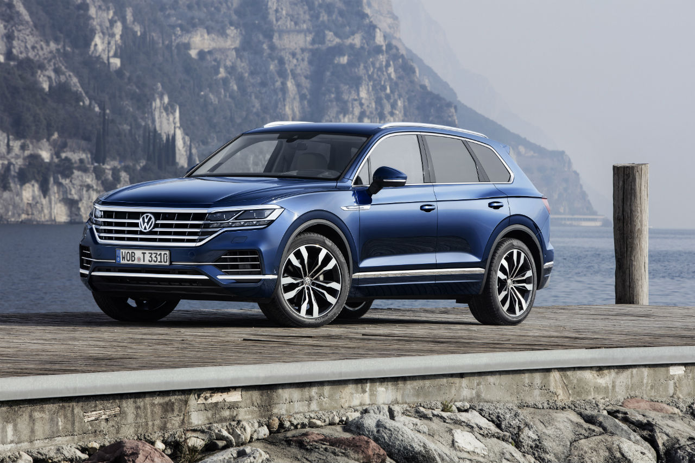
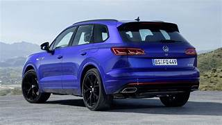
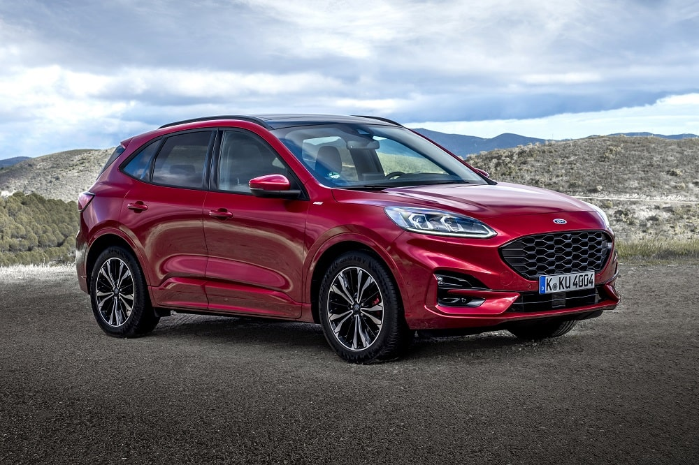
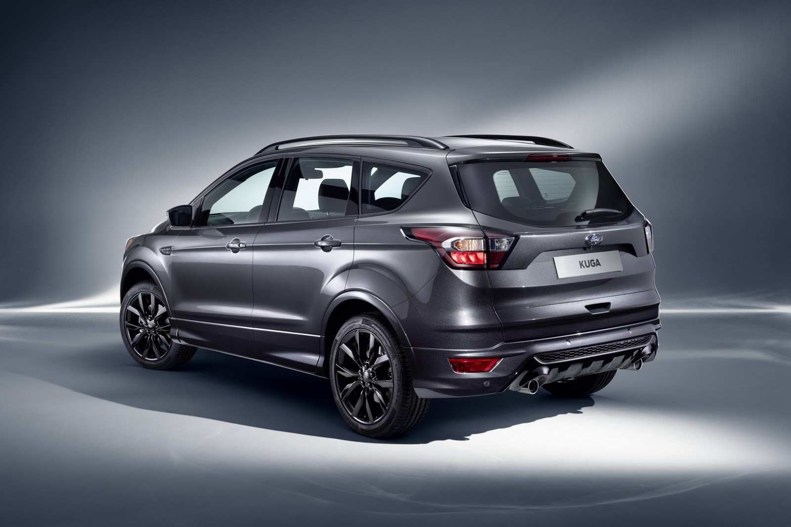

El suv de la marca alemana es uno de los mejores de su segmento. Nada que envidiarle a las marcas premium, excelente calidad y prestaciones.
A FAVOR
EN CONTRA


El suv mediano de la marca del ovalo cuenta con muy buen compartamiento de marcha, tecnologia de avanzada y excelente nivel de seguridad.